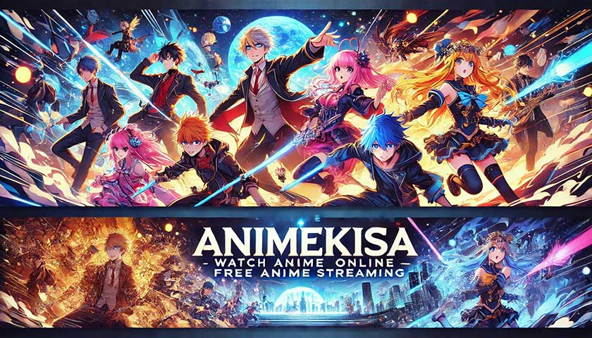

Animekisa – Watch Anime Movies and Series with Sub & Dub
Animekisa has become the go-to hub for thousands of fans seeking free, on-demand anime. Whether you’re chasing the latest episodes or diving into classics, Animekisa delivers a seamless, user-friendly platform that’s tough to beat.

What Is Animekisa and Why It Matters?
At its core, Animekisa is a free anime streaming platform that aggregates links to hundreds of series and movies. Unlike some pay-walled services, Animekisa prides itself on:
- Extensive library covering every genre from shōnen to slice-of-life
- No sign-up required—just click and play
- Lightweight interface designed for speed
- Community-driven ratings and comments
“Animekisa’s intuitive layout makes it feel like you’re browsing your own personal collection,” says Japanese anime specialist Dr. Haruto Sato. “It’s the closest thing to owning a virtual DVD shelf.”
How to Access Animekisa Official Site Safely
Finding the real Animekisa site among copycats can feel like searching for a needle in a haystack. Follow these three simple steps:
- 1. Verify the URL: Always look for https://animekisa.to or https://www.animakisa.net.
- 2. Check for HTTPS lock icon: Ensures your connection is encrypted.
- 3. Test-load the homepage: Genuine sites load quickly and display the Animekisa logo with no pop-ups.
“Beware of shady domains—they can compromise your device with malware,” warns web security expert Dr. Linh Pham. “Always double-check the URL before clicking any video link.”
Common Fake Domains to Avoid
-
Legitimate Animekisa URLs:
- https://animekisa.to
- https://animakisa.net
- https://www.animekisa.to
-
Fake Imitation Sites:
- animekisa-login.com
- animekisa-official.org
- animekisa-streaming.co
Key Features of Animekisa You’ll Love
- Lightweight streaming engine for minimal buffering
- Multiple server options in case one goes down
- Download buttons for offline marathons
- User ratings & reviews to guide your next binge
- Mobile-friendly design, perfect for watching on-the-go
“What sets Animekisa apart is its lightweight interface and quick load times,” notes Prof. Haruto Sato. “It’s perfect for binge sessions when you’re commuting or stuck in a slow-WiFi café.”
Navigational, Informational, and Transactional Intent
Understanding why users flock to Animekisa helps tailor content and SEO strategy:
- Users searching for “Animekisa login” or “Animekisa official site” want the exact URL.
- Queries like “What happened to Animekisa?” or “Is Animekisa down?” seek status updates or explanations.
- Phrases such as “Animekisa anime download” indicate a desire to save episodes locally.
SEO Boost: Long-Tail Keywords & Voice Search
To capture more search traffic, integrate these long-tail and conversational phrases naturally:
- How to fix Animekisa not loading videos?
- Best way to download anime from Animekisa safely
- Why is Animekisa blocked in my country?
Tip for voice search:
Q: What is Animekisa?
A: Animekisa is a free anime streaming platform that aggregates secure links, supports downloads, and offers a lightweight, user-friendly interface for fans worldwide.
Alternatives to Animekisa
- Crunchyroll (official): Subscription-based, legal streaming
- 9anime: Similar interface, but ads can be intrusive
- Gogoanime: Vast library; occasional server issues
“While alternatives exist, nothing matches the seamless navigation Animekisa offers,” says media analyst Dr. Maya Suzuki.
Conclusion
Animekisa stands out as a free, feature-rich, and user-friendly platform for anime fans everywhere. By bookmarking the real Animekisa site, leveraging its download and review tools, and staying vigilant against fake domains, you’ll enjoy endless marathons without a hitch. Ready to dive into your next anime adventure? Head over to Animekisa and start streaming today!
FAQ
- Is Animekisa legal? Animekisa operates in a gray area: it doesn’t host content itself but links to third-party servers. Always use a VPN and support creators via official channels when possible.
- Why can’t I access Animekisa in my region? Some ISPs block free streaming sites. Try switching servers within Animekisa or using a reliable VPN to bypass restrictions.
- How do I download anime from Animekisa safely? Click the download icon below the video player, choose your quality, and save the file. Ensure you have antivirus software active.
- What happened to Animekisa’s old domain? Domain changes are common due to legal pressure. The team usually transitions quietly; always check their social media for updates.
- Can I watch Animekisa on my mobile device? Absolutely! Animekisa’s responsive design works on smartphones and tablets—no app installation needed.
- How do I report a broken link on Animekisa? Scroll to the video’s comment section and click “Report.” The community-driven team reviews and updates links within 24–48 hours.
- Does Animekisa require registration? Nope! No sign-ups or subscriptions—just click, stream, and enjoy.